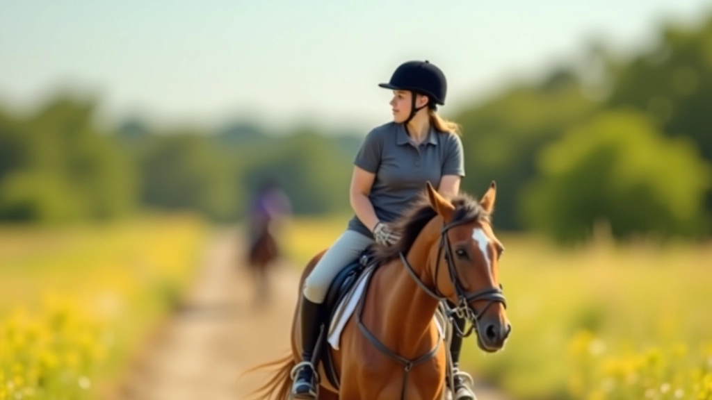
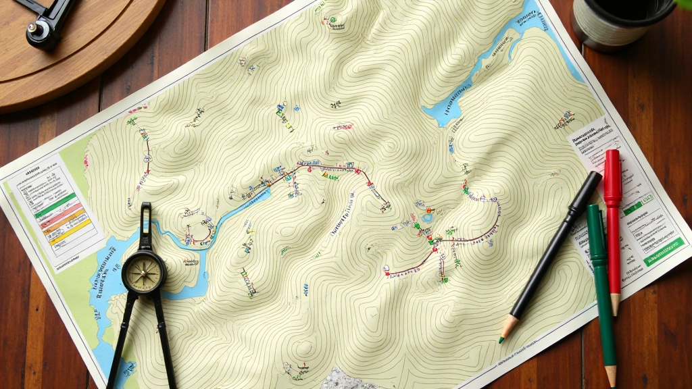
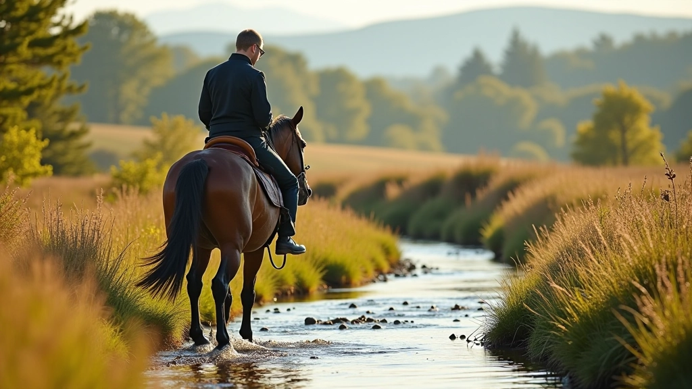
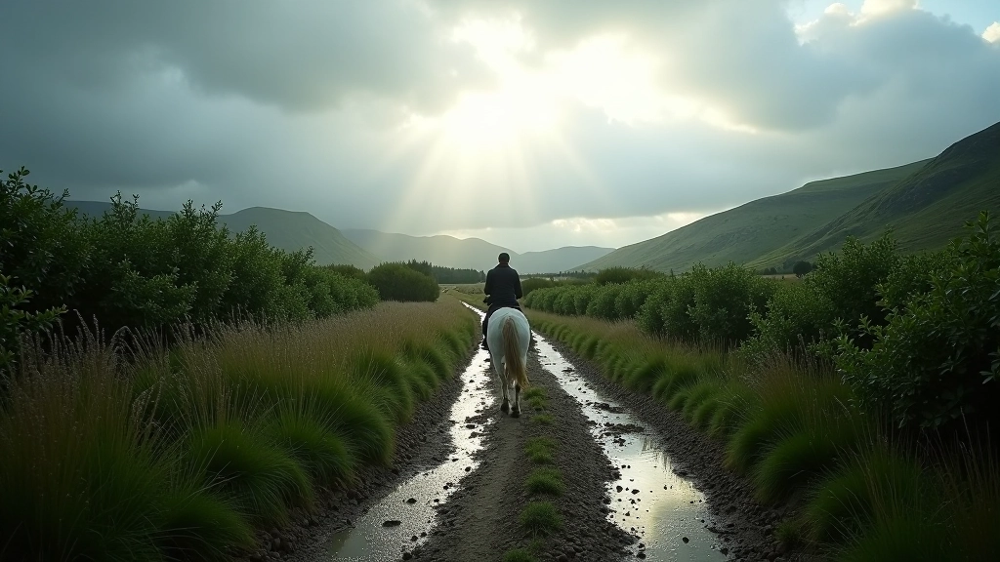
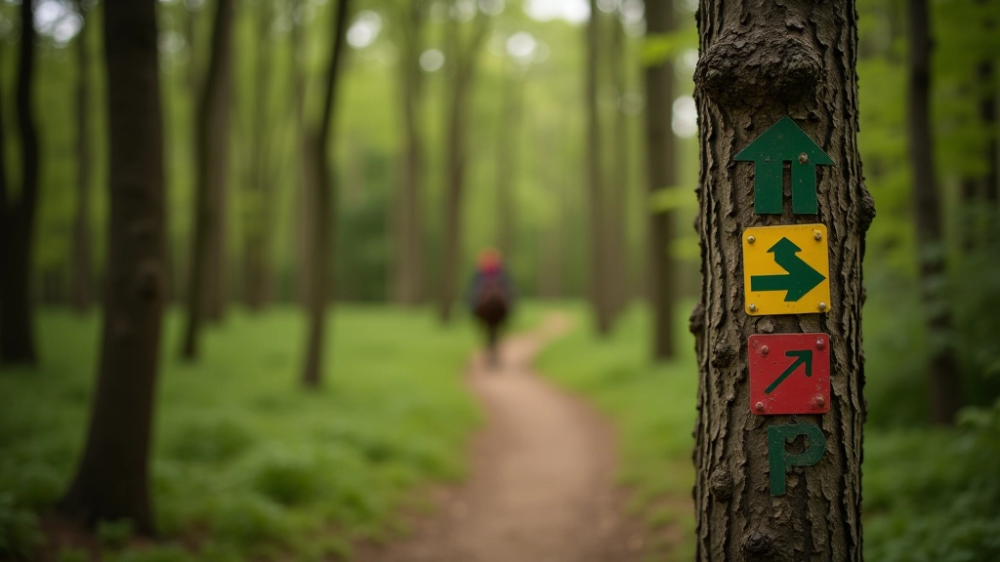
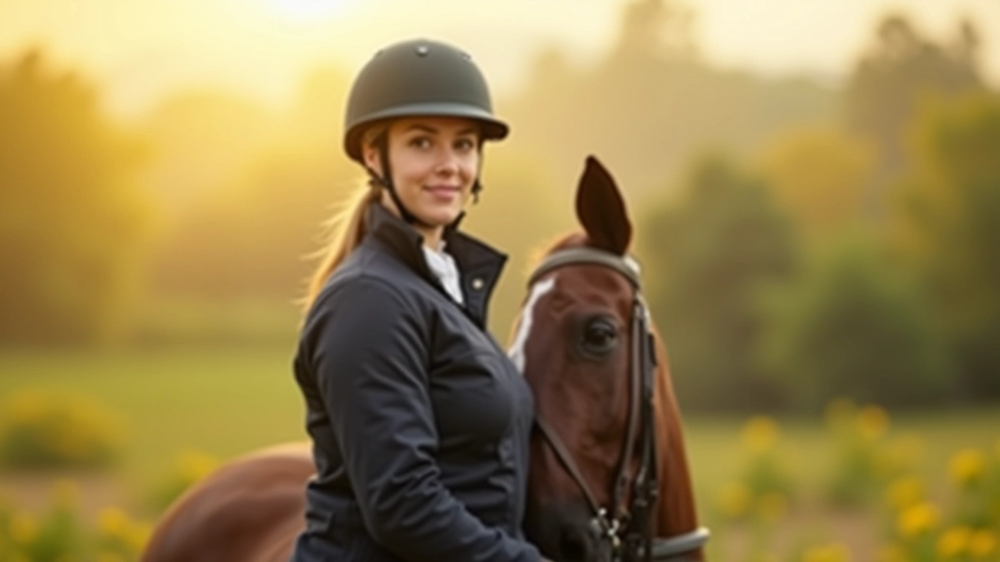

اختيار المسار المناسب لمستواك
كيفية تقييم صعوبة المسار وتضاريسه قبل الانطلاق. معايير اختيار المسار حسب خبرتك وقدرات حصانك وظروف الطقس.


فريق طريق الخيل التحريري
فريق التحرير
كتبه فريق طريق الخيل التحريري، متخصص في تقديم إرشادات عملية وموثوقة عن ركوب الخيل عبر المسارات الطبيعية.
البداية الصحيحة: معرفة مستواك
الخطأ الأكبر الذي يقع فيه الفرسان الجدد هو اختيار مسار صعب جداً. لا تشعر بالذنب إن كنت تريد تحدي نفسك، لكن هناك طريقة ذكية للقيام بذلك. أولاً، عليك أن تكون صادقاً مع نفسك حول مستوى خبرتك. هل ركبت الخيل لمدة شهر أم سنة؟ هل تشعر بالراحة على أنواع مختلفة من التضاريس؟
معظم المسارات مصنفة إلى ثلاثة مستويات: سهل وعادي وصعب. المستوى السهل يعني تضاريس مستوية أو قليلة الانحدار، مسافة تتراوح بين 8-15 كيلومتراً، وآثار واضحة وسهلة التتبع. المستوى العادي يتضمن تضاريس متنوعة مع بعض الانحدارات، مسافات من 15-25 كيلومتراً، وقد تحتاج لمهارة في قراءة الخريطة.
إذا كنت مبتدئاً حقاً، ركز على المسارات السهلة. هذا ليس خجلاً — إنه حكمة. ستتعلم أكثر عندما تشعر بالراحة، وستستمتع أكثر بالتجربة.

فحص التضاريس والمسافة
قبل أن تنطلق، تحتاج إلى معرفة حقيقية عن المسار. ليس كافياً أن تقول "آه، إنه جميل جداً" — أنت تحتاج أرقاماً وحقائق. كم كيلومتراً تبلغ المسافة الكلية؟ كم ساعة ستستغرق؟ هل هناك أجزاء حادة الانحدار؟
خذ الوقت لدراسة خريطة المسار إن أمكن. لاحظ أماكن الارتفاع والانخفاض. المسار الذي يبدو سهلاً على الخريطة قد يكون صعباً جداً إذا كان هناك انحدار حاد في النصف الثاني. ستجد أن معظم المسارات الجيدة تحتوي على نقاط راحة — أماكن يمكنك أن تتوقف فيها، تشرب الماء، تتنفس قليلاً.
إذا كنت تخطط لمسار 20 كيلومتراً، يجب أن تحسبها على أنها رحلة 4-5 ساعات تقريباً، ليس ساعتين فقط. الفرسان الذين يسرعون عادة ما ينتهي بهم الحال متعبين جداً وحصانهم أكثر إرهاقاً.

حالة حصانك والإعداد البدني
هنا يأتي الجزء الذي ينساه الكثيرون: ليس كل الخيول متساوية. حصانك قد يكون قوياً جداً، لكنه لم يركض مسافات طويلة من قبل. أو قد يكون سريع التعب. كم مرة أخذت حصانك في رحلات طويلة؟ هل هو معتاد على التضاريس الوعرة أم أنه يفضل المسارات المستوية فقط؟
الخيل المبتدئ في المسافات الطويلة يحتاج تحضيراً تدريجياً. ابدأ برحلات قصيرة 5-8 كيلومترات، ثم زيادة المسافة تدريجياً بمعدل 2-3 كيلومترات كل أسبوع أو أسبوعين. لا تتوقع من حصان لم يركض مسافات بعيد أبداً أن يكمل 25 كيلومتراً في اليوم الأول. هذا خطر عليه ويعرضه للإصابة.
لاحظ أيضاً عمر حصانك وصحته. الخيل الصغير جداً والقديم جداً يحتاج معاملة خاصة. تأكد من فحص طبيب بيطري قبل البدء برحلات طويلة.

الطقس والظروف البيئية
الطقس يغير كل شيء. مسار سهل جداً في يوم صافٍ قد يصبح خطراً جداً عندما تمطر. الأرض الرطبة تصبح زلقة، والمسارات الضيقة تصبح أكثر صعوبة. الحصان قد لا يشعر برجليه بشكل صحيح على أرض رطبة.
تحقق من توقعات الطقس قبل يومين من الرحلة. هل ستكون هناك عواصف رعدية؟ هل درجة الحرارة عالية جداً؟ في الأيام الحارة جداً، الخيول تتعب بسرعة أكبر. قد تحتاج إلى اختيار مسار أقصر أو تأجيل الرحلة.
الرطوبة العالية في الصيف تجعل الركوب أصعب. حصانك سيعرق أكثر، وأنت ستشعر بالتعب بسرعة. الرياح القوية أيضاً قد تزعج الحصان. بعض الخيول تخاف من الأصوات المفاجئة أو الحركات السريعة في الأيام العاصفة.

نقاط الخطر والمعالم
كل مسار له نقاط خطرة. قد تكون جسراً ضيقاً، أو مسار حاد جداً، أو منطقة حيث قد تلتقي بسيارات. تعرف على هذه النقاط مسبقاً. إذا كنت تركب مع مجموعة للمرة الأولى، اسأل عن النقاط التي تحتاج حذراً إضافياً.
لاحظ أيضاً المعالم — الأشياء التي تساعدك على معرفة أين أنت. شجرة كبيرة، منزل قديم، نهر، تقاطع طرق. إذا ضعت في الطريق، هذه المعالم ستساعدك على إيجاد الطريق الصحيح مرة أخرى. خذ صورة لخريطة المسار أو اكتب ملاحظات سريعة عن المعالم المهمة.
الخيل الذي يركب نفس المسار عدة مرات سيتذكره وسيصبح أكثر راحة. لا تتفاجأ إذا أراد حصانك أن يتحرك بسرعة أكبر في المسار الثاني أو الثالث.

الإعداد الشخصي والذهني
أخيراً، لا تنسَ نفسك. أنت الفارس. إذا كنت متعباً جداً أو قلقاً أو حتى مصاباً بنزلة برد، فقد لا تكون جاهزاً لرحلة طويلة. الحصان يشعر بتوترك. إذا كنت قلقاً، سيشعر الحصان بذلك ويصبح قلقاً أيضاً.
ارتدِ ملابس مناسبة. لا تحتاج إلى أغلى معدات، لكنك تحتاج إلى ملابس تحميك من الطقس والاحتكاك. احذِ براحة جيدة. شرب الماء بكثرة قبل الركوب وأثناءه. جسمك يحتاج طاقة تماماً كما يحتاجها حصانك.
أخذ نفساً عميقاً. الثقة تأتي من التحضير الجيد. إذا اخترت المسار المناسب، وحضرت نفسك وحصانك بشكل صحيح، فسيكون لديك تجربة رائعة لن تنساها.

الخلاصة: اختيار ذكي = تجربة أفضل
اختيار المسار المناسب ليس عن الخوف — إنه عن الحكمة. الفرسان الحقيقيون يعرفون حدودهم ويحترمونها. يبدأون بمسارات سهلة، يتعلمون، ثم يتقدمون تدريجياً. هذا هو الطريق الآمن والممتع معاً.
كل مرة تركب فيها، تتعلم شيئاً جديداً. في البداية، قد تشعر بالقلق من كل شيء. لكن مع الممارسة، ستصبح أكثر ثقة. ستعرف ما يمكنك القيام به وما لا يمكنك. ستستمتع بالركوب أكثر بكثير.
لا تسمح لأحد يقنعك بركوب مسار صعب جداً. ولا تقلل من قيمة المسارات السهلة. كل رحلة قيمة. كل خطوة خيلك تعلمك شيئاً جديداً. استمتع بالرحلة، وليس فقط الوصول إلى النهاية.
تنبيه مهم
اختر المسارات التي تناسب مستوى خبرتك وقدرات حصانك. تحقق دائماً من الظروف المحلية قبل الانطلاق في أي رحلة. استشر طبيباً بيطرياً إذا كنت قلقاً على صحة حصانك قبل بدء أي نشاط جديد أو رحلة طويلة.